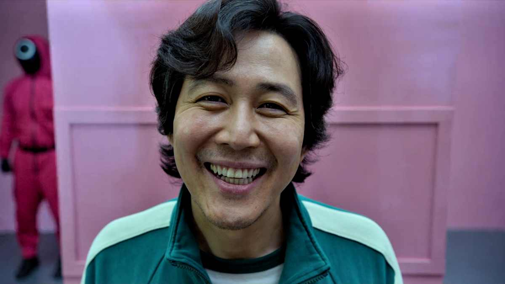
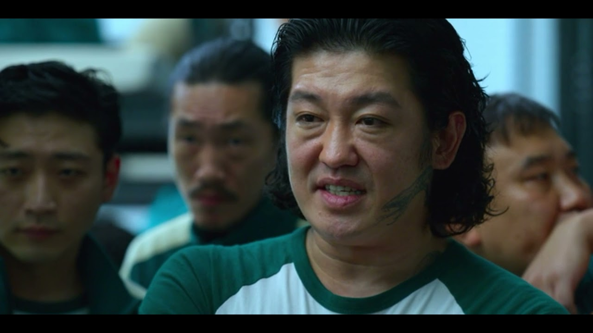
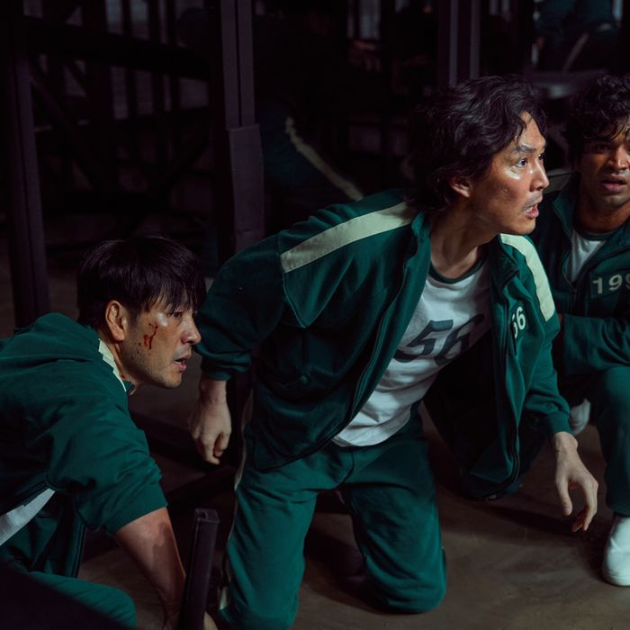
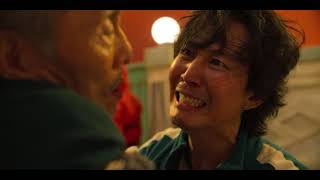
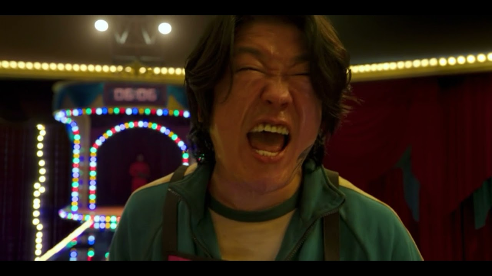
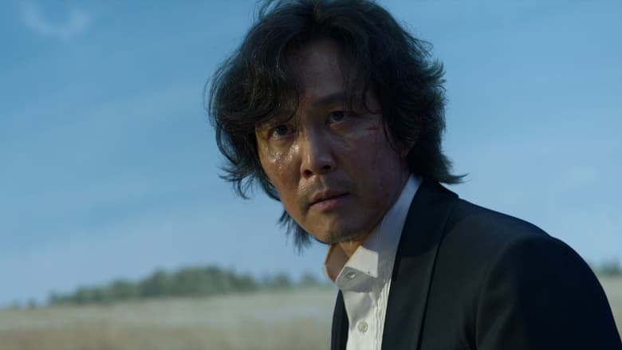

1.Red Light, Green Light
Hoping to win easy money, a broke and desperate Gi-hun agrees to take part in an engimatic game. Not long into the first round, unforeseen horrors unfold.

2.Hell
Split on whether to continue or quit, the group holds a vote. But their realities in the outside world may prove to be just as unforgiving as the game.

3.The Man with the Umbrella
A few players enter the next round - which promises equal doses of sweet and deadly - with hidden advantages. Meanwhile, Jun-ho sneaks his way inside.

4.Stick to the Teamt
As alliances form among the players, no one is safe in the dorm after lights-out. The third game challenges Gi-hun's team to think strategically.
5.A Fair World
Gi-hun and his team take turns keeping guard through the night. The masked men encounter trouble with their co-conspirators.

6.Gganbu
Players pair off for the fourt game. Gi-hun grapples with a moral dilemma, Sang-woo chooses self-preservation and Sae-byeok shares her untold story.

7.VIPs
The Masked Leader welcomes VIP guests to the facility for a front-row viewing of the show. In the fifth game, some players crack under pressure.
8.Frontman
Ahead of the last round, distrust and disgust run deep among the finalists. Jun-ho makes a getaway, determined to expose the game's dirty secrets.

9.One Lucky Day
The final round presents another cruel test but this time, how it ends depends on just one player. The game's creator steps out of the shadows.